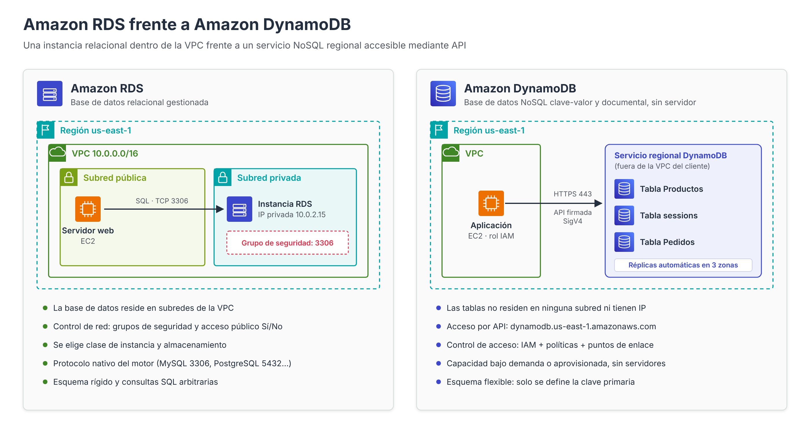
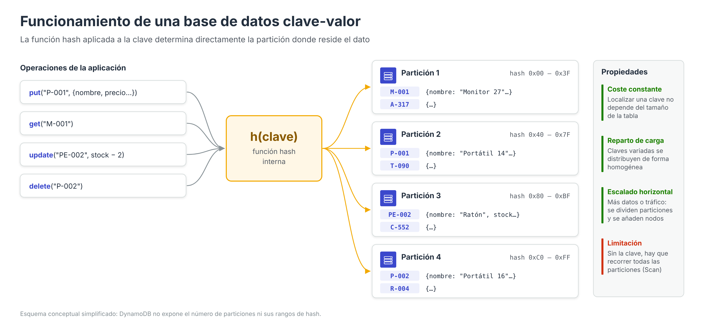
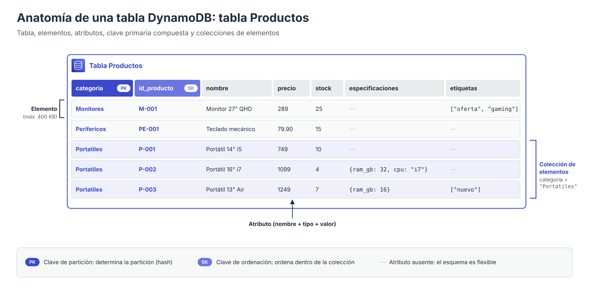

Amazon DynamoDB: introducción y modelo clave-valor¶

En los apartados anteriores se ha estudiado Amazon RDS, un servicio que gestiona motores de bases de datos relacionales (MariaDB, MySQL, PostgreSQL, etc.) desplegados sobre instancias dentro de una VPC. Amazon DynamoDB responde a un planteamiento radicalmente distinto: es una base de datos NoSQL, sin servidor (serverless) y totalmente gestionada, que admite los modelos de datos clave-valor y documento, y que está diseñada para ofrecer una latencia de un solo dígito de milisegundos con independencia del volumen de datos almacenado o del número de peticiones recibidas.
En DynamoDB no existe una instancia que dimensionar, ni un motor que actualizar, ni un sistema operativo que parchear. El administrador crea tablas y AWS se encarga de distribuir los datos, replicarlos, escalar la capacidad y mantener la infraestructura subyacente. Esta abstracción tiene consecuencias importantes sobre la forma de modelar los datos, de consultarlos y, como se verá en el último apartado, de protegerlos.
Las bases de datos NoSQL¶
El término NoSQL (Not only SQL) agrupa a un conjunto heterogéneo de sistemas de almacenamiento que renuncian a algunas de las características del modelo relacional (esquema rígido, normalización, consultas declarativas arbitrarias, operaciones JOIN) para obtener a cambio escalabilidad horizontal, flexibilidad de esquema y rendimiento predecible con grandes volúmenes de datos.
Habitualmente se distinguen cuatro grandes familias:
| Familia | Unidad de almacenamiento | Ejemplos | Servicio AWS |
|---|---|---|---|
| Clave-valor | Par (clave, valor) | Redis, Riak, DynamoDB | Amazon DynamoDB, Amazon ElastiCache |
| Documental | Documento JSON/BSON | MongoDB, Couchbase | Amazon DocumentDB, Amazon DynamoDB |
| Columnar (wide-column) | Filas con familias de columnas | Apache Cassandra, HBase | Amazon Keyspaces |
| Grafos | Nodos y aristas | Neo4j, JanusGraph | Amazon Neptune |
DynamoDB se sitúa en la intersección de las dos primeras familias: el acceso se realiza siempre a través de una clave, pero el valor asociado no es un bloque opaco, sino un conjunto de atributos tipados que pueden contener estructuras anidadas, como en una base de datos documental.
Funcionamiento de una base de datos clave-valor¶
Una base de datos clave-valor puede entenderse como un diccionario (o tabla hash) de gran tamaño, persistente y distribuido entre muchos servidores. Cada dato almacenado se compone de dos partes:
- Clave: identificador único del dato. Es el único elemento por el que el sistema sabe localizar la información.
- Valor: el contenido asociado a la clave. En los almacenes clave-valor puros el valor es opaco (el sistema no conoce su estructura); en DynamoDB, en cambio, el valor es un conjunto de atributos con nombre y tipo.

Operaciones fundamentales¶
El modelo clave-valor se apoya en un conjunto muy reducido de operaciones primitivas:
| Operación | Semántica | Equivalente en DynamoDB |
|---|---|---|
put(clave, valor) |
Almacena (o sustituye) el valor asociado a una clave | PutItem |
get(clave) |
Recupera el valor asociado a una clave | GetItem |
update(clave, cambios) |
Modifica parte del valor | UpdateItem |
delete(clave) |
Elimina el par clave-valor | DeleteItem |
Por qué este modelo escala horizontalmente¶
La característica esencial de un almacén clave-valor es que toda operación conoce de antemano la clave del dato. Esto permite aplicar sobre la clave una función hash que determina de forma inmediata en qué servidor (o partición) reside la información, sin necesidad de consultar índices globales ni de recorrer tablas completas.
De este principio se derivan tres propiedades fundamentales:
- Coste constante de acceso. Localizar un elemento cuesta lo mismo con mil registros que con mil millones, porque el cálculo del hash no depende del tamaño de la tabla.
- Reparto natural de la carga. Si las claves son variadas, la función hash distribuye los datos y las peticiones de forma homogénea entre todas las particiones.
- Crecimiento por adición de nodos. Para aumentar la capacidad basta con dividir particiones y repartirlas entre más servidores (escalado horizontal), a diferencia del modelo relacional tradicional, que tiende a escalar aumentando el tamaño de una única máquina (escalado vertical), como se ha visto al elegir la clase de instancia en RDS.
La contrapartida es evidente: el sistema solo es eficiente cuando se accede por clave. Una consulta del tipo «todos los productos cuyo precio sea superior a 300 €» no puede resolverse calculando un hash, por lo que obliga a recorrer la tabla completa o a crear estructuras adicionales (índices secundarios). Este hecho condiciona todo el diseño de las tablas en DynamoDB.
Modelo relacional frente a modelo clave-valor¶
La siguiente tabla resume las diferencias conceptuales más relevantes entre una base de datos relacional gestionada (Amazon RDS) y DynamoDB:
| Aspecto | Modelo relacional (RDS) | Modelo clave-valor / documento (DynamoDB) |
|---|---|---|
| Esquema | Rígido: columnas y tipos definidos para todas las filas | Flexible: solo se define la clave primaria; cada elemento puede tener atributos distintos |
| Diseño | Se parte de las entidades y se normalizan los datos | Se parte de los patrones de acceso y se desnormalizan los datos |
| Consultas | SQL declarativo, consultas ad hoc arbitrarias | Acceso por clave (GetItem, Query) o recorrido completo (Scan) |
| Relaciones | Claves foráneas y JOIN |
No existen JOIN; las relaciones se modelan agrupando datos bajo una misma clave de partición |
| Escalado | Principalmente vertical (clase de instancia) y réplicas de lectura | Horizontal y automático (particiones) |
| Capacidad | Se aprovisiona una instancia y almacenamiento | Bajo demanda o aprovisionada en unidades de lectura/escritura |
| Transacciones | ACID completas | ACID limitadas (hasta 100 elementos por transacción) |
| Ubicación de red | Instancia dentro de subredes de una VPC | Servicio regional accesible mediante un endpoint de API |
| Lenguaje | SQL | API propia y, opcionalmente, PartiQL (subconjunto compatible con SQL) |
Idea clave
En una base de datos relacional se diseña primero el modelo de datos y después se escriben las consultas que se necesiten. En DynamoDB el proceso es el inverso: primero se identifican las consultas que la aplicación va a realizar (patrones de acceso) y, a partir de ellas, se diseñan las claves de las tablas.
Componentes del modelo de datos de DynamoDB¶
DynamoDB organiza la información en tres niveles:
- Tabla: colección de elementos. Es el recurso que se crea, se configura (capacidad, cifrado, copias de seguridad…) y sobre el que se aplican las políticas de acceso. Su nombre es único dentro de una cuenta y una región.
- Elemento (item): equivalente aproximado a una fila. Cada elemento se identifica de forma unívoca por su clave primaria y puede ocupar como máximo 400 KB, incluyendo los nombres y los valores de todos sus atributos.
- Atributo (attribute): par nombre-valor tipado, equivalente aproximado a una columna. Salvo los atributos que forman la clave primaria, no es necesario declarar los atributos de antemano.

Flexibilidad de esquema¶
Tomando como referencia la tabla Productos de la práctica, los siguientes tres elementos pueden convivir en la misma tabla aunque su estructura sea diferente:
{ "categoria": "Portatiles", "id_producto": "P-001", "nombre": "Portátil 14\" i5", "precio": 749, "stock": 10 }
{ "categoria": "Portatiles", "id_producto": "P-002", "nombre": "Portátil 16\" i7", "precio": 1099, "stock": 4,
"especificaciones": { "ram_gb": 32, "cpu": "i7", "puertos": ["USB-C", "HDMI"] } }
{ "categoria": "Monitores", "id_producto": "M-001", "nombre": "Monitor 27\" QHD", "precio": 289,
"etiquetas": ["oferta", "gaming"] }
Los únicos atributos obligatorios son categoria y id_producto, que forman la clave primaria. El segundo elemento contiene un mapa anidado (especificaciones) y el tercero una lista (etiquetas); esta capacidad para almacenar estructuras jerárquicas es la que confiere a DynamoDB su carácter documental.
Colección de elementos¶
Cuando una tabla tiene clave compuesta (partición + ordenación), el conjunto de elementos que comparten el mismo valor de clave de partición se denomina colección de elementos (item collection). En la tabla Productos, todos los elementos con categoria = "Portatiles" forman una colección; DynamoDB los almacena juntos y ordenados por la clave de ordenación, lo que permite recuperarlos de forma eficiente con una única operación Query. Este concepto se desarrolla en el apartado dedicado a las claves.
Cómo se accede a los datos¶
DynamoDB no expone un lenguaje de consulta general, sino una API con operaciones bien delimitadas. Conocer su coste relativo es imprescindible para diseñar correctamente las tablas:
| Operación | Qué hace | Requisito | Coste relativo |
|---|---|---|---|
GetItem |
Lee un único elemento | Clave primaria completa | Mínimo |
BatchGetItem |
Lee hasta 100 elementos (16 MB) de una o varias tablas | Claves primarias completas | Suma de lecturas individuales |
PutItem |
Crea o sustituye un elemento completo | Clave primaria completa | Una escritura |
UpdateItem |
Modifica atributos de un elemento (o lo crea si no existe) | Clave primaria completa | Una escritura |
DeleteItem |
Elimina un elemento | Clave primaria completa | Una escritura |
BatchWriteItem |
Hasta 25 operaciones Put/Delete (16 MB) |
Claves primarias completas | Suma de escrituras |
Query |
Lee los elementos de una colección, opcionalmente filtrando por la clave de ordenación | Valor de la clave de partición | Proporcional a los elementos leídos de esa colección |
Scan |
Recorre toda la tabla o índice | Ninguno | Proporcional al tamaño total de la tabla |
TransactWriteItems / TransactGetItems |
Operaciones ACID sobre hasta 100 elementos | Claves completas | El doble que la operación normal |
ExecuteStatement (PartiQL) |
Sentencias con sintaxis tipo SQL | Se traduce internamente a las operaciones anteriores | Según la operación resultante |
Las operaciones Query y Scan devuelven como máximo 1 MB de datos por llamada; si hay más resultados, la respuesta incluye LastEvaluatedKey para solicitar la página siguiente.
Query frente a Scan
Una expresión de filtro (FilterExpression) no reduce el coste de una operación: DynamoDB lee primero los elementos y descarta después los que no cumplen el filtro. Así se observó en la práctica, donde el Scan de productos con precio superior a 300 € devolvía Count = 2 pero ScannedCount = 5. Si un patrón de acceso es frecuente, debe resolverse mediante una Query sobre la tabla o sobre un índice secundario, nunca mediante un Scan filtrado.
Diseño orientado a patrones de acceso¶
El proceso de diseño de una tabla DynamoDB suele seguir estos pasos:
- Enumerar los patrones de acceso de la aplicación: qué datos se leen, con qué criterio y con qué frecuencia.
- Elegir la clave de partición para que las consultas más frecuentes se resuelvan con
GetItemoQueryy para que la carga se distribuya uniformemente. - Elegir la clave de ordenación (si procede) para agrupar y ordenar los elementos relacionados.
- Añadir índices secundarios únicamente para los patrones que no puedan resolverse con la clave primaria.
- Desnormalizar: duplicar información cuando evite lecturas adicionales, puesto que no existen JOIN.
Aplicado a la tabla Productos de la práctica:
| Patrón de acceso | Operación | Solución |
|---|---|---|
| Obtener un producto concreto | GetItem |
Clave completa (categoria, id_producto) |
| Listar los productos de una categoría | Query |
Clave de partición categoria |
Listar los periféricos cuyo código empieza por PE- |
Query |
categoria = :c AND begins_with(id_producto, :p) |
| Productos con precio superior a 300 € | Scan (ineficiente) |
Requeriría un índice secundario global sobre precio |
Casos de uso adecuados¶
DynamoDB resulta especialmente apropiado cuando:
- Los patrones de acceso son conocidos y estables y se resuelven por clave.
- Se requiere latencia baja y constante con volúmenes muy elevados de peticiones: carritos de la compra, perfiles de usuario, catálogos, marcadores de videojuegos, Internet de las cosas.
- Se necesita almacenar estado efímero compartido, como las sesiones de usuario de la práctica evaluable, donde cada sesión se recupera exclusivamente por su identificador.
- La carga es muy variable o impredecible, y conviene pagar solo por las peticiones realizadas.
Por el contrario, no es la opción más adecuada cuando la aplicación necesita consultas analíticas o ad hoc, agregaciones complejas, numerosas relaciones entre entidades o transacciones que afecten a grandes conjuntos de registros. En esos escenarios, un motor relacional como los ofrecidos por Amazon RDS o Amazon Aurora suele ser preferible.
Referencias¶
- AWS. What is Amazon DynamoDB? — Guía para desarrolladores
- AWS. Core components of Amazon DynamoDB — Componentes principales
- AWS. From SQL to NoSQL — De SQL a NoSQL
- AWS. Querying tables in DynamoDB — Operación Query
- AWS. Scanning tables in DynamoDB — Operación Scan
- AWS. Best practices for designing and architecting with DynamoDB — Buenas prácticas de diseño
- AWS. PartiQL – a SQL-compatible query language for Amazon DynamoDB — PartiQL
- AWS. What is NoSQL? — Bases de datos NoSQL